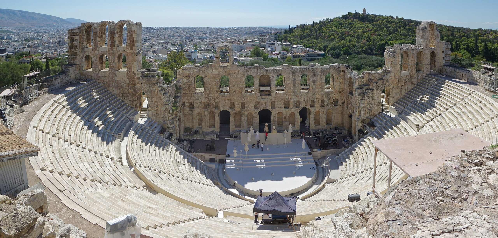
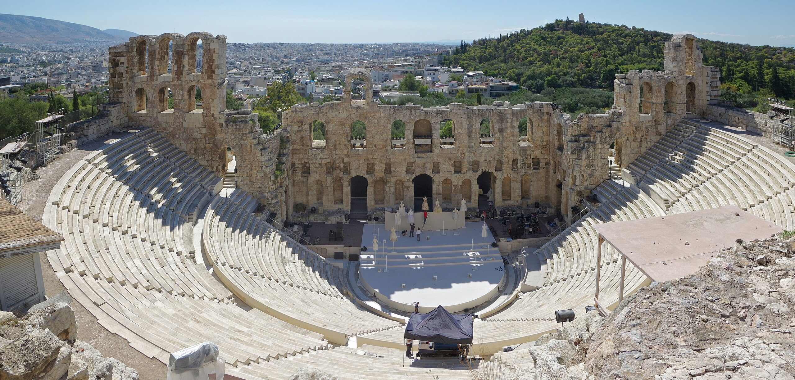

Η Αθήνα είναι η πρωτεύουσα της Ελλάδας από το 1834 και η μεγαλύτερη και πιο πυκνοκατοικημένη πόλη της χώρας. Σύμφωνα με την απογραφή του 2021 από την ΕΛ.ΣΤΑΤ. , ο μόνιμος πληθυσμός της Αθήνας και του Δήμου Αθηναίων ανέρχεται σε 637.798 κατοίκους, και ο μόνιμος πληθυσμός του Πολεοδομικού Συγκροτήματος Αθήνας ανέρχεται σε 3.059.764 κατοίκους. Πήρε το όνομά της από τη θεά Αθηνά. Βρίσκεται στην Αττική, στην ανατολική Στερεά Ελλάδα, και είναι από τις αρχαιότερες πόλεις του κόσμου, με την καταγεγραμμένη ιστορία της να φθάνει έως το 3200 π.Χ.
 

Η Αρχαία Αθήνα, αρχικά οικισμός πάνω στην Ακρόπολη, εξελίχθηκε τον 6ο αιώνα π.Χ. σε μία πανίσχυρη πόλη–κράτος. Υπήρξε μέχρι τον 6ο αιώνα, το σημαντικότερο κέντρο των τεχνών, της γνώσης και της φιλοσοφίας, έδρα της Ακαδημίας Πλάτωνος και του Λυκείου του Αριστοτέλη. Αναφέρεται ευρέως ως γενέτειρα της δημοκρατίας. Συχνά η αρχαία Αθήνα, όπως και γενικότερα η Ελλάδα εκείνης της εποχής, χαρακτηρίζεται «λίκνο του δυτικού πολιτισμού».
Η σύγχρονη Αθήνα είναι το κέντρο της οικονομικής, βιομηχανικής, πολιτικής και πολιτιστικής ζωής της Ελλάδας. Σύμφωνα με την Ευρωπαϊκή Στατιστική Υπηρεσία, η Ευρύτερη Αστική Περιοχή ή Μητροπολιτική Περιοχή της Αθήνας (ο μόνιμος πληθυσμός της ανέρχεται σε 3.622.246 κατοίκους, σύμφωνα με την απογραφή του 2021), είναι η 6η πολυπληθέστερη στην Ευρωπαϊκή Ένωση, με τον πληθυσμό της να εκτιμάται το 2004 στους 4.013.368 κατοίκους. Αξιοθέατα της νεότερης εποχής, χρονολογούμενα από την καθιέρωση της Αθήνας ως πρωτεύουσας του ανεξάρτητου Ελληνικού κράτους το 1834, περιλαμβάνουν τη Βουλή των Ελλήνων (19ος αιώνας), την Τριλογία, ένα σύνολο τριών κτηρίων:
- η Εθνική Βιβλιοθήκη
- το Πανεπιστήμιο
- η Ακαδημία και
- πολλά ακόμα κτήρια, τα περισσότερα δωρεές εθνικών ευεργετών.